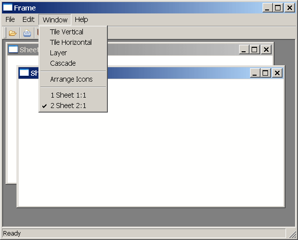

In an MDI frame window, users can open windows (sheets) to perform activities. For example, in an electronic mail application, an MDI frame might have sheets that users open to create and send messages and read and reply to messages. All sheets can be open at the same time and the user can move among the sheets, performing different activities in each sheet.
 About menus and sheets A sheet can have its own menu but is not required to. When
a sheet without a menu is opened, it uses the frame's menu.
About menus and sheets A sheet can have its own menu but is not required to. When
a sheet without a menu is opened, it uses the frame's menu.
To open a sheet in the client area of an MDI frame, use the OpenSheet function in a script for an event in a menu item, an event in another sheet, or an event in any object in the frame.
For more information about OpenSheet, see the PowerScript Reference .
 Opening instances of windows Typically in an MDI application, you allow users to open more
than one instance of a particular window type. For example, in an
order entry application, users can probably look at several different
orders at the same time. Each of these orders displays in a separate
window (sheet).
Opening instances of windows Typically in an MDI application, you allow users to open more
than one instance of a particular window type. For example, in an
order entry application, users can probably look at several different
orders at the same time. Each of these orders displays in a separate
window (sheet).
When you open a sheet in the client area, you can display the title of the window (sheet) in a list at the end of a drop-down menu. This menu lists two open sheets:

 To list open sheets in a drop-down menu:
To list open sheets in a drop-down menu:
Specify the number of the menu bar item in which you want the open sheets listed when you call the OpenSheet function. Typically you list the open sheets in the Windows menu. In a menu bar with four items in the order File, Edit, Windows, and Help, you specify the Windows menu with the number 3.
If more than nine sheets are open at one time, only nine sheets are listed in the menu and More Windows displays in the tenth position. To display the rest of the sheets in the list, click More Windows.
After you open sheets in an MDI frame, you can change the way they are arranged in the frame with the ArrangeSheets function.
 To allow arrangement of sheets To allow the user to arrange the sheets, create a menu item
(typically on a menu bar item named Window) and use the ArrangeSheets function
to arrange the sheets when the user selects a menu item.
To allow arrangement of sheets To allow the user to arrange the sheets, create a menu item
(typically on a menu bar item named Window) and use the ArrangeSheets function
to arrange the sheets when the user selects a menu item.
If sheets opened in an MDI window have a control menu, users can maximize the sheets. When the active sheet is maximized:
Active sheet To close the active window (sheet), users can press ctrl+f4. You can write a script for a menu item that closes the parent window of the menu (make sure the menu is associated with the sheet, not the frame.) For example:
Close(ParentWindow)
All sheets To close all sheets and exit the application, users can press alt+f4. You can write a script to keep track of the open sheets in an array and then use a loop structure to close them.